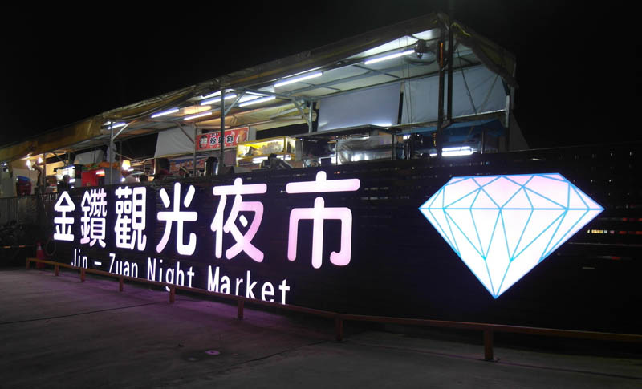
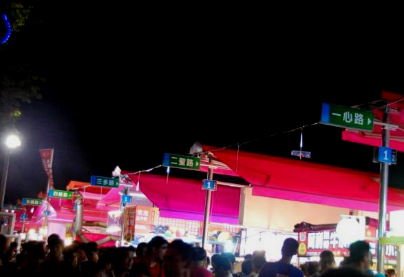
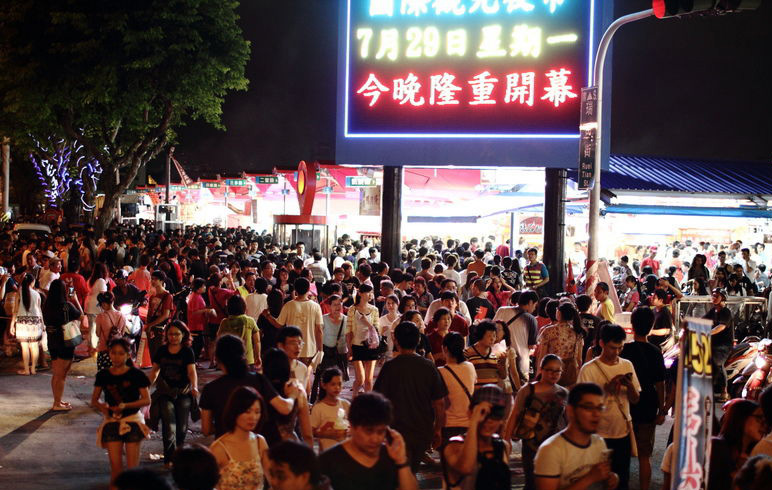
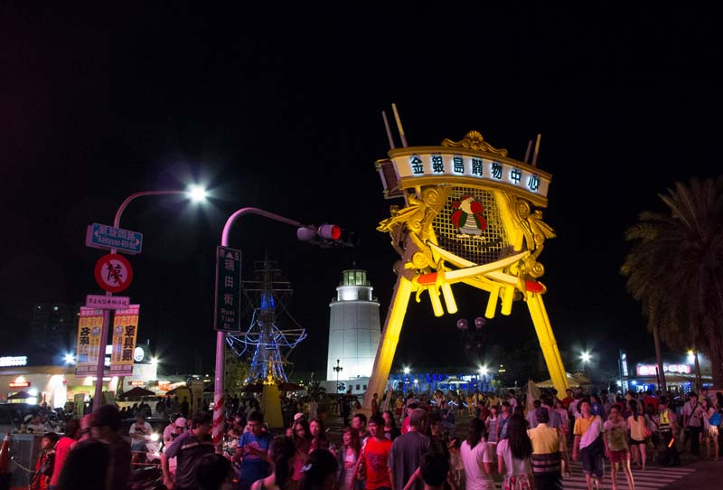
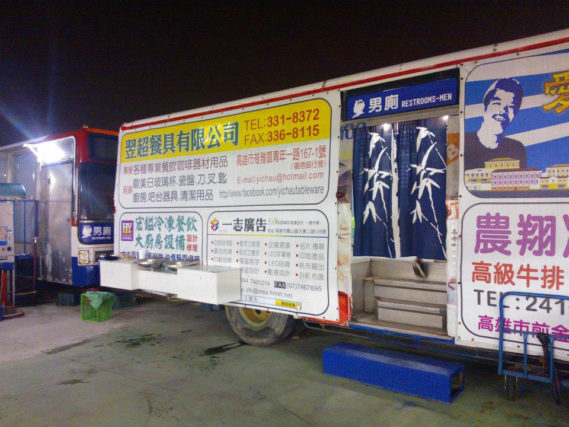

高雄金鑽凱旋夜市
位於臺灣高雄市前鎮區凱旋四路上的夜市，鄰近中山路口，位置為已停業的水上遊樂園布魯樂谷的原址，內部再分為「大高雄夜市」和「金鑽夜市」兩區[1]，並與凱旋國際觀光夜市[2]相鄰，營業日為每週二、週四、週五、週六及週日，每逢週一及週三休市。
夜市佔地約6000坪，於2013年7月26日開幕，以逛夜市不怕雨淋為宣傳，並改造報廢公車成流動廁所，更打造號稱五星級的廁所，夜市裡頭也有許多創新小吃攤位，與凱旋夜市傳統美食路線有所不同的。旁邊又與金銀島購物中心相鄰，使得開幕時立即引起大批人潮前來響應。




